~The Inset Face Tool~
3/3/2025
Using the Last Operation Dialog Box
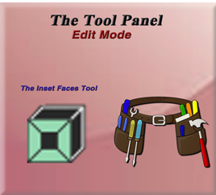
Edit Mode
Go Into Edit Mode, then you will see this tool in the side Tool Panel.
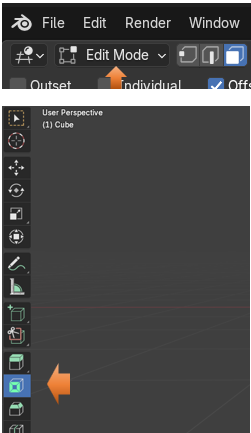
The Inset Faces Tool
The first thing that you will notice when looking at the button for the Inset Faces tool, is that it does not have a little arrow in the bottom right corner. So, this is just one tool, without any other options for it. You can pull out the Tools Panel to the right, and then you can see the names for these tool buttons.
Using the Inset Faces Tool
To Use this tool, we want to be in Face Mode, and we want to select only ONE face.
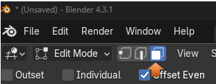With the tool selected, you will notice that we have a circle on that one face that we have selected.
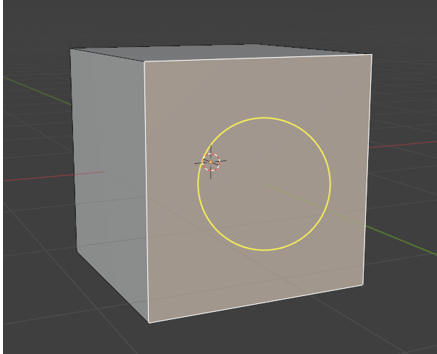
To use this tool, you want to hover over the edges of this yellow circle. This will give you the most control over using this tool. Putting your mouse in the center of the tool and trying to use it is a bit wonky.
Now you want to click and hold and drag inward. This will give you an inward inset in the cube. Pull your mouse in to a position that you want, and then just let go of the mouse button. Letting go of the mouse button signals to Blender that you want the program to accept the changes.
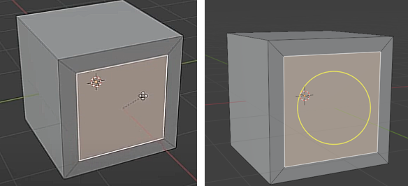
Even though it looks like we still have a flat face, we have actually created new geometry in which we can work with.
Now if you select that middle face, or even those new outer faces that you created around the middle interior face, you can manipulate them. You can rotate it, or use the extrude tool and push that face inward. Anyways, you get the point. You can do things with these new faces.
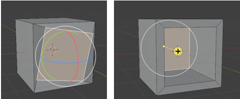
Using the Last Operation Dialog Box
If we go back to scratch with this box, we can redo our inset of faces, and see our dialog box at the bottom of the screen. This box will disappear after you did anything to the inset like rotating it or pushing it in with the extrude tool. Which is what we did. So, to see this box, we actually need to do things again. Just go back to the original cube, and then do the inset operation again.
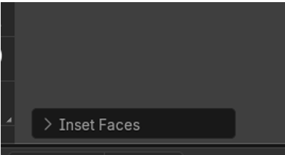
Now you can mess around with these settings in this dialog box, but there a couple of options that I want to focus on.
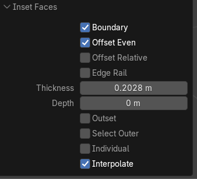
We can change this Thickness setting, and the inset will grow or shrink on the face. But the important part is that it can be measured to a precise setting.
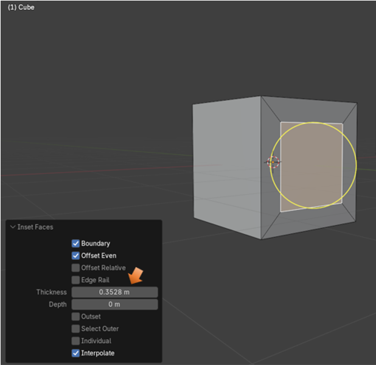
The Depth Setting will pull this face out, or push it in, to a precise setting. So, both of these settings can be extremely useful. Just don’t click outside of the cube because your Last Operation dialog box will disappear, never to reappear. So, you will need to resort to things like the move tool if you want to preform these techniques after clicking outside and making Blender think you are done with working with this tool.
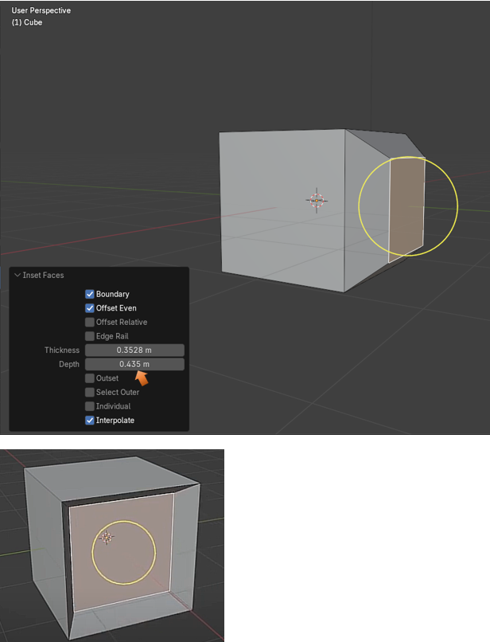
Now you can inset as many times as you want. Creating a new Inset with the inset tool will bring up the dialog box again at the bottom of the screen. With this next illustration you will see that I not only created another inset using the tool, but I also increased the depth slightly on that inner box, using the Last Operation dialog box at the bottom, and messing with the Depth setting. So, now it looks as if this one inner face, is inset even further.
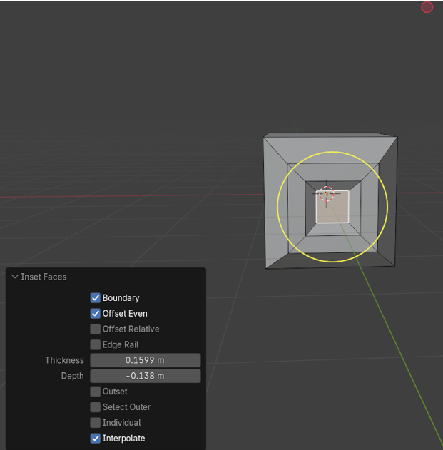
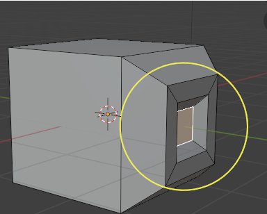
Inset Multiple Faces
You can inset multiple faces at the same time.
To start out, select your top face, and inset that one.
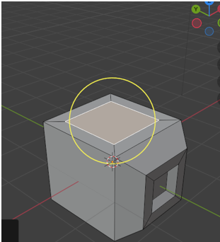
Now select the four faces around it by shift-selecting each one
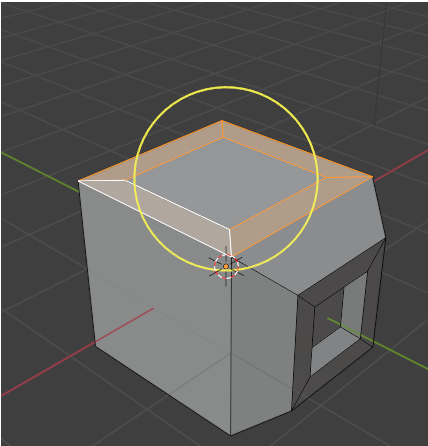
Now inset these 4 faces all at once
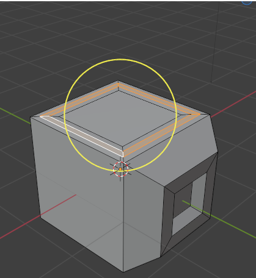
Not too shabby for this little Inset Faces tool.
Well, that is about it on the Inset tool. Just play around with it to see what you can come up with, and have fun.